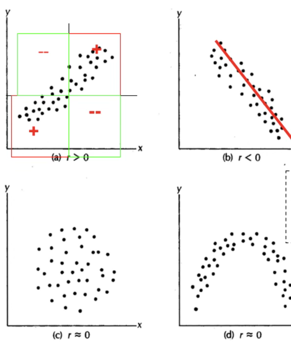
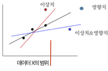
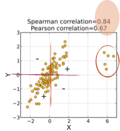
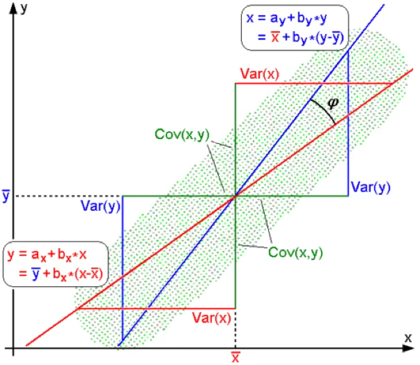
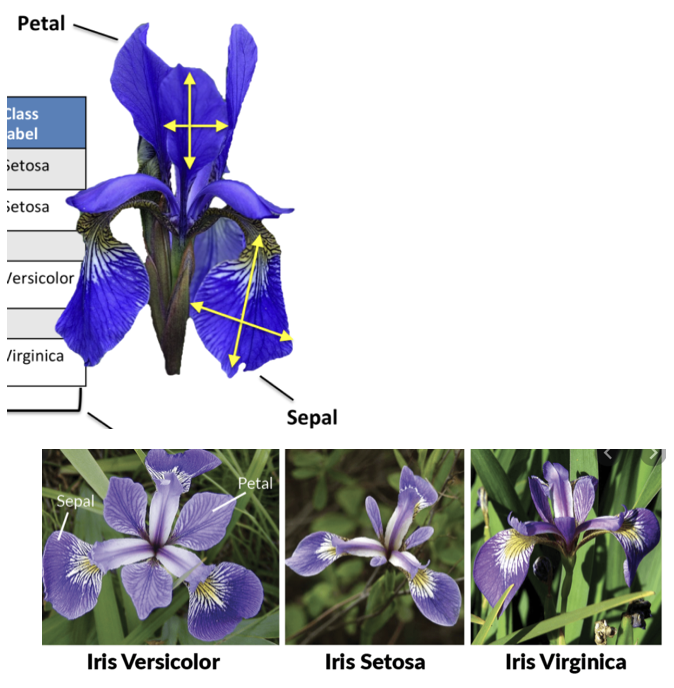
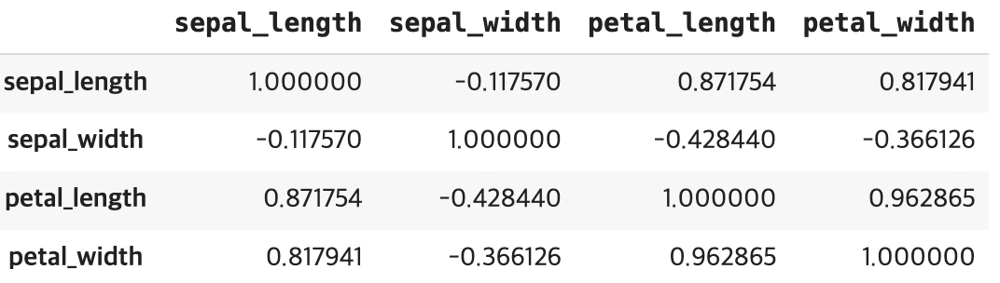
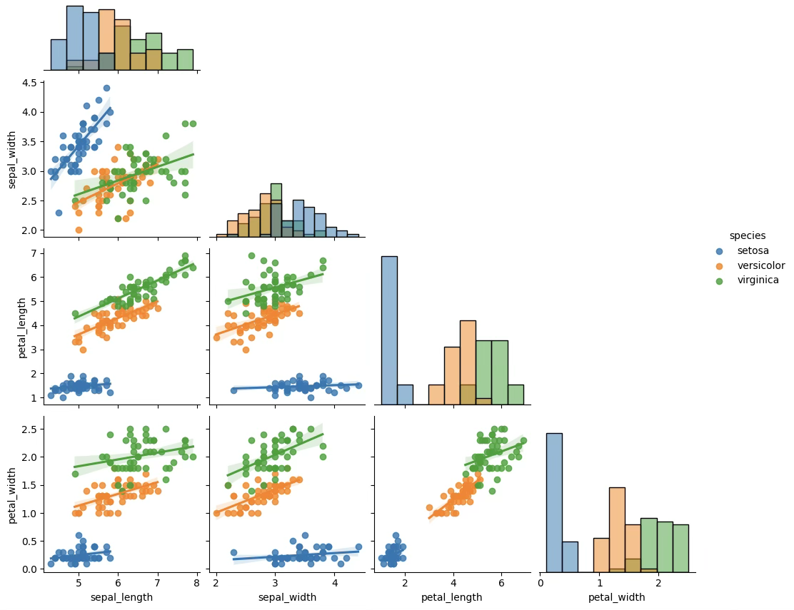

기초통계 7. 상관분석
chapter 1. 상관계수 기초
1. 상관계수 개념
상관계수는 두 개의 측정형 변수(순서형 변수 포함) 간 직선적 관계의 강도와 방향을 수치적으로 나타내는 척도이다. 이 값은 –1에서 1 사이의 범위를 가지며, 1에 가까울수록 두 변수 사이에 강한 양의 선형 관계가 존재함을 의미한다. 반대로 –1에 가까운 값은 강한 음의 선형 관계를 나타내며, 0에 가까울수록 선형 관계가 거의 없다는 것을 뜻한다.
상관계수는 공분산과 유사하게 두 변수 간의 공변동을 바탕으로 계산되지만, 공분산과 달리 단위를 가지지 않는 무차원 지표이다. 이는 변수들의 크기나 단위에 영향을 받지 않기 때문에 서로 다른 척도의 변수들 간에도 관계의 강도를 비교하는 데 유리하다.
두 변수 간에 직선적 관계가 유의하다는 것은 한 변수가 증가할 때 다른 변수도 일정한 비율로 증가하거나 감소한다는 의미이며, 이는 두 변수가 동일한 개체의 특성을 일정 부분 공유하고 있다는 점을 시사한다. 다시 말해, 두 변수는 대상이 가진 정보 중 일부를 중복하여 설명하고 있으며, 이로 인해 하나의 변수만으로도 다른 변수에 대한 예측 가능성이 존재하게 된다. 상관계수는 이러한 변수 간의 정보 중첩도를 간단하고 직관적인 방식으로 요약해주는 지표로서, 탐색적 자료 분석이나 모형 구축의 기초 단계에서 유용하게 활용된다.
다음 그림은 두 변수 간의 상관계수를 시각적으로 나타낸 예이다.

(a)는 상관계수가 양수인 경우로, X가 증가함에 따라 Y도 함께 증가하는 양의 선형 관계를 보인다. 점들이 제1사분면과 제3사분면에 주로 분포하며, 상관계수 r은 0보다 크다.
(b)는 상관계수가 음수인 경우로, X가 증가하면 Y가 감소하는 음의 선형 관계를 보인다. 점들이 좌상단에서 우하단으로 뚜렷하게 분포하며, r은 0보다 작다.
(c)는 상관계수가 0에 가까운 경우로, X와 Y 사이에 뚜렷한 선형 관계가 존재하지 않는다. 점들이 원형에 가깝게 고르게 흩어져 있어, 선형 경향이 없다.
(d) 역시 상관계수가 0에 가까운 경우이지만, 곡선 형태의 관계가 존재한다. X와 Y 사이에 비선형적 패턴이 있으나, 직선 관계를 전제로 한 상관계수 값은 거의 0에 가깝다.
2. 인과관계와 상관관계
상관관계와 인과관계는 두 변수 간의 관련성을 설명할 때 자주 사용되지만, 본질적으로 서로 다른 개념이다. 상관관계는 두 변수의 값이 함께 변하는 경향성을 수치적으로 나타내며, 이러한 관계는 양의 방향이거나 음의 방향일 수 있다. 그러나 상관관계가 존재한다고 해서, 반드시 한 변수가 다른 변수의 변화에 영향을 주는 원인이라고 단정할 수는 없다.
두 변수 간의 상관계수가 높게 나타나는 경우에도 그 관계는 단순한 우연일 수 있으며, 때로는 제3의 숨은 요인(잠재변수)이 두 변수 모두에 영향을 주어 상관관계를 만들어낼 수도 있다. 예를 들어, 아이스크림 판매량과 익사 사고 건수 간에는 여름철에 모두 증가하는 경향이 있어 양의 상관관계가 나타날 수 있으나, 이 둘 사이에 인과적 관계가 있는 것은 아니다. 여기서 실제 영향 요인은 계절, 즉 기온이라는 제3의 변수이다.
따라서 상관관계는 변수들 간의 관련성을 탐색하거나 예비적 가설을 세우는 데 유용한 도구이지만, 인과관계를 입증하기 위한 충분조건은 아니다. 변수 간의 인과성을 확인하기 위해서는 보다 정교한 연구 설계, 예를 들어 실험 연구나 종단적 자료 분석, 또는 통제 변수와 도구 변수 등을 활용한 통계적 모형이 필요하다. 결론적으로, 상관관계를 인과관계로 잘못 해석하는 오류를 방지하기 위해서는 분석 목적과 방법론에 대한 신중한 접근이 요구된다.
상관관계(Correlation) \(X \leftrightarrow Y\)
상관관계는 두 변수 간의 관련성을 나타냅니다. 어떤 변수의 값이 변할 때 다른 변수의 값도 함께 변하는 정도를 나타낸다.
상관관계는 피어슨 상관계수, 스피어만 상관계수 등과 같은 통계적 방법을 사용하여 측정된다.
상관관계는 두 변수 간의 연관성을 보여줄 뿐, 한 변수가 다른 변수를 원인으로 하여 변화시키는지에 대한 정보를 제공하지 않는다.
인과관계(Causation) \(X \rightarrow Y\)
인과관계는 한 변수가 다른 변수에 영향을 주는 관계를 나타내며 한 변수의 변화가 다른 변수의 변화를 일으키는 관계를 설명한다.
인과관계를 확인하기 위해서는 실험적인 접근이 필요하다. 예를 들어, 실험 그룹과 대조 그룹을 설정하여 한 변수를 조작하고 그 결과를 다른 변수에 대비하여 관찰한다. 인과관계를 확인하기 위해서는 상관관계 이외의 추가적인 통계적 또는 실험적인 증거가 필요하다.
인과관계와 상관관계 예제
여름철에 아이스크림의 판매량이 증가하고 생수 판매량도 함께 증가한다. 이 경우 아이스크림 판매량과 마실 물의 양 사이에는 양의 상관관계가 있을 것으로 예상되지만 둘 간에는 인과관계가 존재한다고 단정할 수 없다.
다른 예를 들어보자. A도시에서 고학력자 비율과 맥주 소비량의 상관계수 높다고 하여 고학력자일수록 맥주를 많이 마신다는 인과 관계 설명은 적절하지 않다.
3. 산점도
두 개의 측정형 변수 데이터 \((x_{i},y_{i})\)를 2차원 좌표평면에 나타내면, 두 변수 간의 함수적 관계를 시각적으로 파악할 수 있다. X축에는 결정 요인으로서 예측변수, 독립변수, 또는 설명변수라 불리는 변수를 배치한다. Y축에는 결과를 나타내는 목표변수, 종속변수, 또는 반응변수를 배치한다. 이러한 산점도는 두 변수 간의 인과관계를 직관적으로 관찰할 수 있는 시각적 도구로 활용된다.

(1) 진단내용: 함수관계
산점도는 두 변수 간의 함수 관계를 파악하는 데 사용된다. 일반적으로 해석이 용이하고 상관계수의 기준이 되는 직선적 관계의 정도를 확인하는 데 활용된다. 이러한 함수 관계의 해석은 수집된 데이터의 범위 내에서만 타당하다. 관측 범위를 벗어난 구간에서는 두 변수 간의 관계가 기존 데이터에서 나타난 패턴과 다를 수 있으므로, 범위를 넘어선 해석에는 주의가 필요하다.
(2) 진단내용 이상치
이상치의 정의와 특성
이상치(outlier)란 데이터 집합에서 다른 관측치들과 비교하여 현저히 동떨어진 값을 뜻한다. 다시 말해, 관측된 데이터 분포의 범위를 크게 벗어나 극도로 작거나 큰 값이 이상치이다 . 이러한 값은 보통 데이터 입력 실수, 측정 오류, 또는 실제로 드물게 발생하는 예외적 상황이나 외부 요인에 의해 생길 수 있다 . 이상치는 그 특이성 때문에 분석가의 주의를 끌며, 데이터의 전반적 패턴과 다르기 때문에 특별한 관리가 필요하다. 실제로 이상치는 데이터 분석이나 모델링 결과에 큰 영향을 미칠 수 있으므로 적절한 처리 없이는 의사결정에 오류를 초래할 수 있다 . 특히 평균, 표준편차와 같은 통계량이나 상관계수 등 대부분의 모수적 통계 측도들은 이상치에 민감하여, 몇 개의 이상치만으로도 통계 결과가 크게 왜곡될 수 있다 . 따라서 통계 분석에서는 이상치를 반드시 확인하고 진단하는 절차가 요구된다.
두 변수 간 직선 관계에서 이상치의 중요성
두 변수 사이의 선형 관계(linear relationship)를 분석할 때 이상치는 특히 중요한 역할을 한다. 산점도 상에서 대부분의 점들이 어느 직선 부근에 모여있더라도, 하나의 극단적인 이상치가 있으면 회귀선의 기울기와 절편, 상관계수 등 추정치가 크게 변할 수 있다. 예를 들어, 아래 산점도는 한 이상치 집단(빨간색 동그라미 친 부분)의 존재가 상관계수에 미치는 영향을 보여준다. 이 경우 Pearson의 피어슨 상관계수는 0.67에 불과하지만, 이상치의 순위를 무시하는 Spearman의 스피어만 순위상관은 0.84로 유지된다.
이는 극단적인 관측점들이 들어옴으로써 두 변수 간 선형적 상관이 약화된 반면, 순서 관계에 기반한 상관은 비교적 덜 영향을 받는다는 것을 시사한다. 일반적으로 이상치가 직선 관계에서 벗어난 위치에 있으면 데이터 전체의 상관관계를 희석시키거나 왜곡시켜 결정계수(R²)와 같은 적합도 지표를 떨어뜨린다 . 실제 한 사례에서는, 이상치가 없을 때 R²가 0.94로 높았지만 이상치 하나를 포함시키자 R²가 0.55로 크게 감소하였다 . 이처럼 이상치는 선형 회귀식의 적합성을 감소시키고, 회귀 계수의 통계적 유의성마저 흔들 수 있다.
한편, 이상치의 영향은 항상 적합도를 낮추는 방향으로만 작용하지 않을 수도 있다. 자료 끝부분의 극단적인 한 점이 다른 점들과 동일한 직선 패턴 상에 놓여 있지만 X값 범위가 매우 크다면, 그 점은 회귀 직선을 강하게 끌어당겨 기울기를 크게 변화시킬 수 있다. 이러한 점을 보통 영향점(influential point)이라고 부르며, 영향점이 존재하면 회귀 직선의 기울기가 크게 변하고 상관계수가 오히려 증가하거나 감소하는 등 모델에 과도한 영향을 미친다 . 예컨대 한 연구에서 X축의 오른쪽 끝에 위치한 단 하나의 영향점 때문에 회귀선의 기울기가 -2.5에서 -1.6으로 변하고, 결정계수도 0.46에서 0.52로 증가한 경우가 보고된 바 있다 . 따라서 이상치는 데이터 패턴에 어긋나는 경우 모델 적합성을 떨어뜨리지만, 데이터 분포의 가장자리에서 지렛대(leverage) 역할을 하는 점은 모델의 추세 자체를 크게 바꾸기도 한다. 더욱이 드물지만, 데이터 대부분은 관계가 없는데 특이점 하나 때문에 거짓된 상관관계가 발생하는 경우도 있다. 즉 이상치 하나가 존재할 때에만 두 변수 간에 상관이 생기고, 그 점을 제외하면 전혀 관계가 없는 상황이 있을 수 있다 . 이러한 경우 회귀모형의 추정된 관계는 실제 현상을 반영했다기보다 이상치 한 개에 의해 인위적으로 생성된 것이므로, 해석에 각별한 주의가 필요하다. 정리하면, 이상치는 두 변수 간 직선적 연관성 분석에서 관계의 강도를 약화시키거나 (혹은 때로는 과대평가하는 방향으로) 왜곡할 수 있기 때문에, 선형 모델링에서는 이러한 점들을 간과해서는 안 된다.
이상치의 시각적 진단과 통계적 기준
시각적 진단은 이상치를 탐색하는 첫 단계로서, 산점도(scatter plot)는 두 변수 관계에서 이상치를 찾아내는 유용한 도구이다 . 산점도를 그려보면 대다수의 점들은 어떤 군집 또는 패턴을 이루는데, 이상치는 이 군집에서 현저히 동떨어져 있는 점으로 나타난다. 예를 들어, 한 변수의 값이 주어졌을 때 다른 변수의 예측되는 범위에서 크게 벗어난 위치에 존재하는 점은 이상치로 의심할 수 있다 . 회귀선을 그렸다면, 그 선으로부터 수직 방향으로 멀리 떨어진 점들이 바로 반응변수 방향의 이상치를 의미한다. 이러한 점들은 잔차(residual)가 매우 큰 관측치들로, 회귀모형이 잘 설명하지 못한 값들이다 . 마찬가지로, 산점도에서 수평 방향으로 한쪽에 치우쳐 다른 점들과 X값 범위가 동떨어진 관측치는 설명변수 쪽 이상치로 볼 수 있다. 일반적으로 2차원 산점도에서 이상치는 육안으로 어느 정도 발견이 가능하지만, 주관적 판단에 의존하므로 통계적 기준과 함께 활용하는 것이 좋다.
통계적 기준으로는 보통 잔차의 크기를 표준화하여 이상치를 판별한다. 표준화 잔차(standardized residual)란 잔차 $e_i$를 그 표준오차로 나누어 무단위화한 값으로, 잔차의 z-점수에 해당하는 지표이다 . 표준화 잔차의 절댓값이 지나치게 크면 해당 관측치는 회귀 직선으로부터 과도하게 벗어나 있음을 의미한다. 관행적으로 $|r_i| > 2$이면 이상치 가능성을, $|r_i| > 3$이면 유력한 이상치로 간주한다 . 즉 잔차가 평균으로부터 3표준편차보다 더 떨어져 있으면 데이터 분포의 극단에 위치한 것이므로 이상치일 확률이 높다고 보는 것이다 . 이 기준은 정규분포 가정하에 약 99%의 관측치는 ±3 범위 내에 존재한다는 원리에 따른 경험법칙이다. 보다 엄밀한 회귀진단에서는 스튜던트화 잔차(studentized residual)와 같은 지표를 사용하여 이상치를 판정하고, 본페로니 보정까지 적용해 유의확률 관점에서 이상치 여부를 테스트하기도 한다 . 예를 들어 외부 스튜던트화 잔차의 검정에서 유의확률이 0.05 미만인 점을 이상치로 판정하는 식이다 . 이렇듯 통계적 기준은 시각적 판단을 보조하여 이상치를 객관적으로 식별하는 역할을 한다. 다만, 표준화 잔차나 스튜던트화 잔차가 임계값을 넘더라도 그것만으로 바로 해당 점이 잘못된 데이터라고 단정할 수는 없으므로, 추가적인 검토가 필요하다.
예측 모형에서 이상치의 영향
이상치는 예측 모형(predictive model)의 성능과 해석에 큰 영향을 주므로, 종종 ”양날의 검”으로 비유된다 . 한편으로 이상치는 회귀 계수 추정과 같은 모형 해석을 교란시켜 모형의 정확도를 떨어뜨리고 신뢰성을 훼손할 수 있다. 다른 한편으로는, 그 비정상적인 관측치 자체가 중요한 단서나 정보를 제공하기도 한다 . 예를 들어, 생산 공정 데이터에서 발생한 이상치는 시스템의 고장이나 이상 신호를 나타낼 수 있고, 사회 과학 데이터에서 발견된 이례적인 패턴은 새로운 인과 관계의 발견으로 이어질 수 있다 . 이러한 긍정적 측면에도 불구하고, 일반적으로 이상치가 포함되면 모형의 적합도가 저하되고 예측력이 약화되는 부정적 영향이 두드러진다.
통계학적으로 볼 때, 최소제곱 회귀와 같은 기법은 모든 관측치를 대상으로 오차 제곱합을 최소화하므로 한 개의 극단적 오차가 전체 모형을 좌우할 수 있다. 이는 곧 이상치 하나가 잔차 제곱합에 크게 기여하여 회귀선의 기울기나 절편을 왜곡시키고, 결과적으로 대부분의 정상적인 관측치에 대한 예측 정확도를 떨어뜨릴 수 있다는 뜻이다. 아울러 이상치는 회귀모형의 잔차 정규성, 등분산성 등의 가정을 위반하게 만들어 모형의 신뢰 구간이나 검정 결과에 문제를 일으킬 수 있다 . 예컨데 20대 소비생활 데이터에 수집된 표본 중 한 명이 재벌가 자녀처럼 극도로 지출이 큰 경우를 생각해보자. 이 한 명은 다른 999명의 일반적인 생활비 수준과 동떨어져 있기 때문에, 회귀 분석을 통해 20대 평균 생활비를 추정할 때 그 추정치를 한층 높이고 오차를 크게 만들 것이다 . 이러한 이상치는 모형을 학습시킬 때 포함할지 여부를 고민해야 할 만큼 예측 결과에 영향을 미칠 수 있다 . 따라서 이상치가 존재하면 모형의 성능 지표(예: $R^2$, RMSE 등)가 나빠지거나, 회귀 계수의 통계적 유의성이 떨어지며, 예측에 대한 불확실성이 증가하는 경향이 있다. 이상치로 인해 학습된 모델은 새로운 데이터에 대해 과소적합 혹은 과대적합되는 양상을 보일 수도 있다 (이상치를 맞추려고 복잡해지거나, 반대로 이상치를 무시하면서 일반 패턴을 놓칠 수 있다). 요컨대, 이상치는 예측 모형의 정확성과 견고성(robustness)을 해칠 수 있으므로 모형 개발 단계에서 면밀한 진단과 대처가 필요하다.
이상치 처리: 고전적 접근과 정보적 가치
과거 고전적 통계학에서는 이상치를 발견하면 데이터의 오류나 이분산의 원인으로 간주하여 제거하는 것이 일반적인 처리 방식이었다 . 만약 해당 관측값이 명백히 잘못 기록된 값이거나 물리적으로 불가능한 값이라면 제거는 당연한 조치다. (예를 들어 어느 데이터셋에서 성인 여성의 몸무게가 19파운드로 입력되어 있다면 이는 입력 오류이므로 그 자료점을 분석에서 제외해야 한다 .) 또한 이상치가 뚜렷하게 모형의 결과를 왜곡하고 있다면, 분석가는 그 데이터를 제거한 후 모형을 재적합하여 결과가 개선되는지 확인해볼 수 있다 . 실제로 회귀진단에서는 잔차와 지렛값을 함께 고려한 쿡의 거리(Cook’s distance) 등의 지표를 활용하여, 영향력이 큰 이상치를 식별하고 이러한 점들을 제외한 모형의 적합도를 비교하는 것이 하나의 절차로 확립되어 있다 . 만약 이상치 제거 후에 결정계수 등이 크게 향상되고 모형 가정도 만족된다면, 해당 관측치를 이유있는 제거(justified exclusion)로 문서화한 뒤 최종 모델에서 제외하기도 한다 . 다만 통계 분석 보고에서는 임의로 데이터를 삭제했다는 오해를 피하기 위해, 어떤 점을 이상치로 판단하여 제외했는지 그리고 그 효과가 어땠는지 언급하는 것이 권장된다 . 고전적 접근의 이 같은 제거 방법은 모형의 안정성과 가정 충족을 높이는 장점이 있지만, 동시에 잠재적으로 유용한 정보까지 잃어버릴 위험도 수반한다 . 특히 표본 크기가 크지 않은 연구에서는 몇 개 안 되는 이상치를 삭제함으로써 정보 손실이나 표본 편향이 발생할 수 있으므로 신중한 판단이 필요하다 .
현대의 대용량 데이터 분석이나 머신러닝 관점에서는 이상치를 단순히 제거 대상이 아닌 학습과 발견의 대상으로 바라보는 경향이 강해지고 있다. 무엇보다도 이상치 중 상당수는 잘못된 값이 아니라 실제로 일어난 의미 있는 사건의 지표일 수 있다 . 따라서 ”단지 이상치라는 이유만으로 데이터를 버려서는 안 된다. 어떤 이상치는 온전히 실제 관측값이며, 때로는 가장 흥미로운 정보를 담고 있는 경우도 있다”는 지적이 설득력을 얻고 있다 . 예컨데 금융 사기 탐지에서는 정상 거래들과 달리 극단적인 패턴을 보이는 이상치가 사기의 징후이며, 제조 품질 데이터에서는 이상치가 장비 이상이나 새로운 결함을 시사할 수 있다. 이렇듯 분야에 따라 이상치는 도리어 분석자가 찾아내고자 하는 핵심 목표가 되기도 한다. 실제로 이상치 탐지(outlier detection 또는 이상감지 anomaly detection)는 데이터 세트에서 기대되는 패턴과 다른 특이한 데이터 포인트를 찾아내는 독자적인 분석 분야로 발전해왔다 . 이는 곧, 이상치를 **노이즈(noise)**로 간주하여 제거만 할 것이 아니라 **잠재적 시그널(signal)**로 해석하여 추가 조사나 모형 개선에 활용해야 한다는 현대적 관점이다. 예를 들어, 이상치가 기존 모형에 포함되지 않은 어떤 숨은 요인의 영향으로 발생한 것이라면, 이를 제거하는 대신 그 요인을 설명 변수로 모형에 추가하여 모형 구조를 확장해볼 수 있다 . 또는 이상치의 영향력을 줄이는 로버스트 회귀나 변환 방법(예: 로그 변환) 등을 통해 모든 데이터를 포괄하면서도 이상치에 둔감한 모델을 구축할 수도 있다 .
대용량 데이터의 맥락에서는, 수백만 건의 데이터 중 몇 개의 이상치가 포함되더라도 전체 통계량에 미치는 비중은 상대적으로 작아질 수 있다. 따라서 이전보다 이상치로 인한 왜곡이 덜 심각할 수도 있지만, 동시에 방대한 데이터에서는 극단치 자체가 더 많이 발생할 확률이 높기에 복잡한 이상치 패턴이 나타날 가능성도 있다. 대규모 데이터 분석에서 중요한 것은, 이상치를 판별하여 배제하는 것과 탐지하여 활용하는 것 사이에서 문제의 목적에 맞게 균형을 잡는 일이다. 이상치가 단순한 입력 오류로 확인된다면 이는 제거하거나 보정해야 한다. 그러나 이상치가 도메인 상 의미를 지닐 가능성이 있다면, 해당 관측치를 별도로 분석하거나 도메인 전문가와 협의하여 추가적인 인사이트를 얻는 방향으로 활용하는 것이 바람직하다. 결국 이상치 처리에 정해진 정답은 없으며, 맥락에 따른 판단이 요구된다. 통계적 신뢰성을 위해 이상치를 과감히 제외해야 할 때도 있지만, 새로운 정보를 얻기 위해 이상치를 탐구해야 할 때도 있다 . 오늘날의 데이터 과학자는 이 두 측면을 모두 고려하여 이상치를 다룸으로써, 보다 견고하면서도 정보를 놓치지 않는 분석을 수행해야 할 것이다.
(3) 진단내용 영향치
영향치(influential observation)란 X축, 즉 예측변수의 값이 데이터 전체 분포의 범위를 벗어난 관측치를 말한다. 이러한 영향치는 회귀 분석에서 추정된 회귀식과 적합도 지표에 직접적인 영향을 미칠 수 있다. 영향치는 크게 두 가지 유형으로 구분된다. 첫째, 순수 영향치(pure leverage point)는 추정된 회귀 직선 위에 위치하여 기울기에는 영향을 주지 않지만, 예측변수의 범위를 넓힘으로써 결정계수를 인위적으로 높인다. 이로 인해 예측변수가 반응변수를 설명하는 능력이 실제보다 과대평가될 수 있다. 둘째, 이상 영향치(outlying leverage point)는 회귀 직선에서 크게 벗어난 위치에 있는 관측치로, 이상치(outlier)의 성격을 지닌다. 이러한 점은 회귀계수 추정과 예측 성능 모두에 왜곡을 일으킬 가능성이 크다.
영향치의 존재 여부는 Hat 통계량(Hat matrix diagonal), 즉 지렛값(leverage)을 통해 진단한다. 지렛값은 각 관측치의 예측변수 값이 전체 데이터 중심에서 얼마나 떨어져 있는지를 나타내며, 값이 클수록 영향치일 가능성이 높다.
영향치가 발견되면, 해당 점의 주변에서 추가 데이터를 수집하여 분석의 안정성을 높이는 것이 바람직하다. 만약 해당 관측치의 값이 실제로 발생할 가능성이 없거나 측정 오류로 확인된다면 분석에서 제외할 수 있다. 그러나 현실적으로 발생 가능한 값이라면, 그 관측치가 분석 대상 현상을 설명하는 데 어떤 의미를 갖는지 면밀히 검토한 뒤 처리 방안을 결정해야 한다.
chapter 2. 상관계수 계산
상관계수는 두 변수 간의 직선 관계를 측정하는데 사용되는 통계적 지표이다. 두 변수 간의 선형 관계성의 방향과 강도를 나타낸다.
1. 상관계수 종류
Karl Peason 공식
모집단 상관계수 : \(\rho = \frac{COV(X,Y)}{\sqrt{V(X)\sqrt{V(Y)}}}\)
데이터(표본 상관계수) 계산식 : \(r = \frac{\sum_{i}^{n}(x_{i} - \overline{x})(y_{i} - \overline{y})}{\sqrt{\sum_{i}^{n}(x_{i} - \overline{x})^{2}}\sqrt{\sum_{i}^{n}(y_{i} - \overline{y})^{2}}}\)
분모는 확률변수의 표준편차이므로 상관계수의 부호를 결정하는 것은 분자항의 공분산이다.
Spearman 순위 상관계수
【방법1】
\[ r_s = Corr(R_{X_i}, R_{Y_i}) \quad \text{where } R_{X_i} \text{는 } X_i \text{의 크기 순위이며, } R_{Y_i} \text{는 } Y_i \text{의 크기 순위이다.} \]
【방법2】
\[ r_s = 1 - \frac{6 \sum d_i^2}{n(n^2 - 1)}, \quad d_i = R_{X_i} - R_{Y_i} \]
대부분의 데이터 범위 밖에 있는 관측치(타원형 내 관측치)는 상관계수 값을 높이는 역할을 하므로 상관계수를 계산하기 전에 반드시 산점도를 그려 데이터의 범위를 많이 벗어난 관측치가 있는지 확인하여 상관분석의 활용도를 높일 필요가 있음.
【두 상관계수의 관계】
아래 그림은 동일한 자료에 대해 Spearman 상관계수와 Pearson 상관계수를 비교한 것이다. Pearson 상관계수는 두 변수 간의 선형 관계 강도를 나타내며, 값이 0.67로 비교적 강한 양의 상관관계를 보인다. 반면 Spearman 상관계수는 변수의 순위에 기반하여 단조 관계의 강도를 측정하며, 값이 0.84로 Pearson 계수보다 높다.

이러한 차이는 오른쪽 상단에 위치한 일부 이상치 집단의 영향 때문이다. Pearson 상관계수는 값의 크기 자체를 사용하므로 이상치에 민감하게 반응하여 계수 값이 낮아진다. 반면 Spearman 상관계수는 순위 정보만을 사용하므로 이상치가 순서를 크게 변경하지 않는 한 영향을 적게 받는다.
따라서 이 자료는 단조 관계가 매우 강하지만, 이상치로 인해 선형 관계가 상대적으로 약화된 경우에 해당한다. 이상치가 존재하는 경우 값의 크기에 의해 상관관계 척도를 계산하는 피어슨 상관계수 값이 작아진다. 그러므로 피어슨 상관관계를 활용하는 경우 이상치 진단 후 이상치를 제거한 후 상관계수를 구하는 것을 권한다.
Kendall \(\tau\) 상관계수
\[ \tau = \frac{\# of\ concordant\ pairs - \# of\ disconcordant\ pairs}{n(n-1)/2} \]
\[ \text{concordant} = \begin{cases} (x_i > x_j,\; y_i > y_j) \quad \text{이거나} \\ (x_i < x_j,\; y_i < y_j) \end{cases} \]
\[ \text{즉, 두 관측치 } (x_i, y_i), (x_j, y_j) \text{가 위 조건을 만족하면 concordant 쌍이라 한다.} \]
2. (피어슨) 상관계수 유의성 검정
스피어만 상관계수, 켄달 \(\tau\)의 샘플링 분포를 알려지지 않아 비모수적 방법으로 검정하게 된다.
귀무가설 : 두 변수의 직선 상관관계는 유의하지 않다. <=> 서로 독립이다. \(H_{0}:\rho = 0\)
대립가설 : 두 변수의 직선 상관관계는 유의하다. \(H_{0}:\rho \neq 0\)
데이터 검증
데이터는 이변량 정규분포에 근사해야 한다. 단 n>20 인 대표본에서는 문제 없으므로 대용량 데이터 상관계수 구할 때는 문제가 없다.
이상치가 상관계수에 영향을 주므로 산점도를 그려 데이터 범위(X-) 밖의 관측치 존재 여부를 체크해야 하나 대용량 데이터에서는 큰 의미가 없다.
검정통계량
표본 크기가 n, 표본 (피어슨) 상관계수가 r인 경우 검정통계량은 다음과 같고 검정통계량의 샘플링 분포는 t-분포를 따른다.
\[ts = \frac{r - \rho = 0}{\sqrt{\frac{1 - r^{2}}{n - 2}}} \sim t(n - 2)\]
결론
유의확률 \(P(t(n - 2) \geq |ts|) = p_{value}\)이 유의수준보다 작다면 귀무가설을 기각하여 상관관계의 유의하다고 결론내리고 표본상관계수의 부호를 이용하여 해석한다.
귀무가설이 기각, 표본상관계수 부호 + => 두 변수는 양의 상관관계가 있고 한 변수의 값이 증가(감소)하면 다른 변수의 값도 증가(감소)한다.
귀무가설이 기각, 표본상관계수 부호 - => 두 변수는 음의 상관관계가 있고 한 변수의 값이 증가(감소)하면 다른 변수의 값도 감소(증가)한다.
3. (피어슨) 상관계수 해석


출처 : 위키피디아
회귀모형의 회귀계수와 부호는 동일하나 예측모형의 인과 관계 해석은 적절하지 않다.
상관관계 높다는 것은 상관계수의 절대값이 1에 가깝다는 것을 의미하며 대부분의 관측점들이 직선 상에 있다는 것을 의미한다.
상관계수가 1에 가까우면 양의 선형 상관 관계가 존재한다. 한 변수의 값이 증가(감소)하면 다른 변수 값도 증가(감소)한다. –1에 가까우면 음의 선형 상관 관계가 존재한다. 한 변수의 값이 증가(감소)하면 다른 변수 값은 감소(증가)한다.
상관계수가 0이 의미하는 것은 직선 관계가 존재하지 않는다는 것이지 함수 관계가 존재하지 않는 것은 아니다. 위의 그림에서 볼 수 있듯이 2차 함수나 원 함수의 상관계수도 0이다.
두 변수의 상관 관계가 높다는 것은 두 변수가 동일한(comparable) 개념을 측정한다는 의미도 담고 있다(두 변수가 유사함). 그러므로 변수를 축약하거나 개체를 분류하는데 사용되는 다변량 분석에서는 공분산(혹은 상관계수) 개념이 사용된다.
| 상관계수 해석 (Rule of Thumb) | |
|---|---|
| \[|r| \approx 0\] | 상관관계 존재하지 않음 |
| \[0 < |r| < 0.2\] | 매우 약한 상관관계 존재함 |
| \[0.2 \leq |r| < 0.4\] | 약한 상관관계 존재함 |
| \[0.4 \leq |r| < 0.6\] | 상관관계 존재함 |
| \[0.6 \leq |r| < 0.8\] | 강한 상관관계 존재함 |
| \[0.8 < |r| \approx 1\] | 매우 강한 상관관계 존재함 |
| \[|r| = 1\] | 완벽한 상관관계 존재함 |
4. 상관계수 관련 코맨트
\(H_{0}:\rho = \rho_{0}\) 검정
상관관계 유의성(상관 관계 존재 여부, \(H_{0}:\rho = 0\))을 검정하는 것이 아니라 임의의 상관계수와 동일한지 검정한다. (예제) 미국의 경우 부자 키의 상관계수는 0.65이다. 한국의 경우 미국과 부자의 키의 상관계수가 같다고 할 수 있나? 귀무가설 : \(H_{0}:\rho = 0.65\)
검정통계량 : \(ts = \frac{\frac{1}{2}ln\frac{1 + r}{1 - r} - \frac{1}{2}ln\frac{1 + \rho}{1 - \rho}}{\frac{1}{\sqrt{n - 3}}} \sim N(0,1)\)
서로 독립인 2집단 상관계수 차이 \(H_{0}:\rho_{x} = \rho_{y}\) 검정
\(z(x) = \frac{1}{2}ln\frac{1 + r_{x}}{1 - r_{x}}\), \(z(y) = \frac{1}{2}ln\frac{1 + r_{y}}{1 - r_{y}}\)
검정통계량 : \(ts = \frac{z(x) - z(y)}{\sqrt{1/\sqrt{n_{x} - 1} + 1/\sqrt{n_{y} - 1}}} \sim N(0,1)\)
회귀계수와 관계 \(Y = \alpha + \beta X + e\)
독립변수 X가 Y에 선형적 영향을 미치는지 검정 <=> 기울기 \(H_{0}:\beta = 0\)(영향을 미치는 않음) 유의성 검정 <=> 상관계수의 유의성 검정(\(H_{0}:\rho = 0\))과 동일하다.
\(\widehat{\beta} = \sqrt{\frac{S_{XY}}{S_{XX}}}r\), \(S_{XX} = \sum(X_{i} - \overline{X})^{2}\), \(S_{XY} = \sum(X_{i} - \overline{X})(Y_{i} - \overline{Y})\)
상관계수 부호와 회귀계수 부호는 동일하다.
두 통계량 모두 \(t(n - 2)\) 분포를 갖는 검정통계량으로 검정한다. 그러므로 두 통계량의 유의확률은 동일하다.
단순 회귀모형에서 결정계수 Determination Coefficient(\(R^{2} = \frac{SST}{SSR} = \frac{\sum(y_{i} - \overline{y})^{2}}{\sum({\widehat{y}}_{i} - \overline{y})^{2}}\))의 제곱근은 상관계수이다. \(r = \pm \sqrt{R^{2}}\)
5. 상관계수 활용
변수의 유사성 척도
상관계수는 두 변수 간의 직선적 관계의 강도와 방향을 나타내는 통계적 척도이며, 이를 통해 변수들 간의 유사성을 평가할 수 있다. 상관계수가 1 또는 –1에 가까울수록 두 변수는 매우 강한 선형 관계를 가지며, 이는 곧 두 변수가 공통적으로 설명하는 정보가 많음을 의미한다. 다시 말해, 상관관계가 높다는 것은 두 변수 간의 정보 중복도가 크다는 뜻이며, 동일한 대상을 설명하기 위해 두 변수 모두를 사용할 필요가 없을 수 있음을 시사한다.
예를 들어, 키와 몸무게는 일반적으로 양의 상관관계를 보인다. 키가 큰 사람일수록 몸무게도 무거운 경향이 있으므로, 이 두 변수는 상당한 수준의 정보를 공유하고 있다. 따라서 신체 특성을 설명하거나 분류하는 데 있어 경우에 따라 두 변수 중 하나만 사용해도 충분할 수 있다.
또 다른 예로, 기성복 하의를 구매하는 상황을 들 수 있다. 하의의 착용 적합성을 판단할 때 길이(허리에서 무릎까지, 무릎에서 발목까지)와 넓이(허리둘레, 허벅지둘레, 발목둘레) 등 다양한 측정 변수를 고려할 수 있으나, 이들 사이에는 높은 상관관계가 존재할 수 있다. 예컨대 기장 관련 변수들은 서로 밀접하게 연관되어 있으며, 넓이 관련 변수들은 허리둘레와 강한 상관관계를 가질 수 있다. 이 경우 각 범주에서 하나의 대표 변수만 측정하더라도 나머지 변수들을 상당 부분 예측하거나 대체할 수 있다.
이와 같이 상관계수는 변수 선택이나 차원 축소 과정에서 유용하게 활용된다. 상관관계가 높은 변수들을 모두 사용할 경우 분석 모델에 불필요한 중복이 생기고, 다중공선성 문제를 유발할 수 있다. 따라서 상관계수를 이용하여 변수 간 유사성을 평가한 뒤, 정보의 손실을 최소화하면서 일부 변수만을 선택하여 분석의 효율성과 해석력을 높이는 것이 바람직하다.
결론적으로, 상관계수는 두 변수 간 관계를 파악하는 것을 넘어, 변수 간 정보 중복을 진단하고 데이터 구조를 간결하게 정리하는 데 중요한 도구로 작용한다. 이는 통계 분석뿐 아니라 기계학습, 추천 시스템, 설문지 문항 축소 등 다양한 응용 분야에서 핵심적인 개념으로 활용된다.
회귀분석 : 종속변수 설명력 높은 변수 사전 선택
회귀분석은 종속변수와 하나 이상의 설명변수 간의 관계를 분석하여, 종속변수를 예측하거나 설명하는 데 목적이 있다. 이때 설명변수의 수가 많고, 데이터의 관측치 수가 상대적으로 적은 경우, 회귀모형은 과적합(overfitting) 문제에 직면할 수 있다. 과적합이란 모형이 학습 데이터에는 지나치게 잘 맞지만, 새로운 데이터에 대해서는 일반화 능력이 떨어지는 현상을 말한다. 따라서 설명변수의 수를 적절히 제한하여 모형의 복잡도를 줄이는 것이 바람직하다.
특히 고차원 데이터나 빅데이터 환경에서는 변수 선택의 중요성이 더욱 강조된다. 이와 같은 상황에서는 종속변수와 각 설명변수 간의 상관계수를 우선적으로 계산하고, 일정 기준 이상의 상관관계를 보이는 변수들만을 선택하여 예측모형을 구성하는 접근이 널리 사용된다. 예를 들어, 상관계수가 일정 수준(예: 절댓값 기준 0.3 이상)인 변수만을 선택함으로써, 종속변수와의 연관성이 낮은 설명변수를 사전에 제거하고 모형의 안정성과 해석력을 동시에 확보할 수 있다.
이러한 변수 축소 방식은 계산 효율성은 물론, 예측 정확도 향상과 해석 용이성 측면에서도 유용하다. 다만, 상관계수는 두 변수 간의 단순한 선형 관계만을 반영하므로, 변수 간 상호작용이나 비선형적 관계를 고려하지 못한다는 한계도 존재한다. 그럼에도 불구하고, 회귀분석의 초기 단계에서 설명변수의 수를 줄이기 위한 기준으로 상관계수는 실용적이고 직관적인 도구로 널리 활용되고 있다.
회귀분석 : 다중공선성 문제 해결
회귀모형 \(y = X\beta + e\)의 \(\beta\)의 OLS 추정치는 \(\beta = (X'X)^{- 1}X'y\)이다. 설명변수(\(X\)) 간의 상관관계가 높으면 \(det(X'X) \simeq 0\)이므로 \(X'X^{- 1}\)의 값이 매우 커진다.
선형 회귀분석에서 가장 널리 사용되는 추정 방법은 최소제곱법(Ordinary Least Squares, OLS)이다. OLS는 잔차 제곱합을 최소화하는 회귀계수의 추정치를 제공하며, 일정한 가정이 충족될 경우 일치성과 불편성을 갖는 효율적인 추정량으로 평가된다.
그러나 설명변수들 간에 높은 상관관계가 존재하는 경우, 즉 다중공선성(multicollinearity)이 나타나면 이러한 추정의 안정성이 심각하게 훼손된다. 설명변수들 간의 상관관계가 높을수록 설계행렬의 자기상관 구조가 강해지며, 이로 인해 (X’X)^{-1} 행렬의 값이 커지게 된다. 이는 OLS 추정량의 분산, 즉 추정값의 변동성이 커짐을 의미하며, 결과적으로 회귀계수의 추정치가 민감하게 변동하거나 심지어 부호가 바뀌는 등 해석상 혼란을 초래할 수 있다.
이러한 문제는 특히 설명변수 간의 중복 정보가 많고, 각 변수의 독립적 기여도가 명확하지 않은 상황에서 두드러진다. 모형의 설명력은 높게 나타날 수 있으나, 개별 회귀계수의 통계적 유의성이 낮아지고 신뢰구간이 넓어지는 현상이 관찰된다. 이는 예측의 정확도뿐 아니라 회귀모형 해석의 타당성에도 악영향을 미친다.
다중공선성 문제를 해결하기 위한 대표적인 방법은 다음과 같다. 첫째, 종속변수와의 상관관계가 더 높은 설명변수만을 선택하고, 상관관계가 높은 다른 설명변수는 제거하는 방식이다. 이를 통해 중복되는 정보를 제거하고 회귀계수의 안정성을 확보할 수 있다. 둘째, 주성분 분석(Principal Component Analysis, PCA)을 이용하여 원래의 상관된 변수들을 공분산 구조에 따라 변환하고, 서로 직교(상관계수 0)인 새로운 주성분을 생성하여 이들을 설명변수로 활용하는 방법이 있다. 이러한 방식은 정보의 손실을 최소화하면서 다중공선성을 효과적으로 제거할 수 있다는 점에서 이론적, 실무적으로 모두 유용하다.
따라서 회귀모형을 설정할 때는 설명변수 간의 상관구조를 면밀히 진단하고, 다중공선성으로 인한 추정 불안정성을 줄이기 위한 변수 선택 및 차원 축소 기법을 적극적으로 고려할 필요가 있다.
chapter 3. 다변량 상관계수
1. 행렬 연산
다변량 데이터 행렬: 행의 차수 n, 열(변수)의 개수 p인 데이터 행렬 \(X_{n \times p} = \begin{pmatrix} x_{11} & x_{12} & \ldots & x_{1p} \\ x_{21} & x_{22} & \ldots & x_{2p} \\ \ldots & & & \\ x_{n1} & x_{n2} & \ldots & x_{np} \end{pmatrix}\)
확률변수 열벡터: \(\underset{¯}{x} = \left( \begin{array}{r} x_{1} \\ x_{2} \\ \ldots \\ x_{p} \end{array} \right)\)
평균벡터
ONE 벡터 : \({\underset{¯}{1}}_{n} = \left\lbrack \begin{array}{r} 1 \\ 1 \\ \ldots \\ 1 \end{array} \right\rbrack\) 모든 원소가 1인 벡터
평균벡터 : \(E(\underset{¯}{x})_{1 \times p} = {\underset{¯}{1}}^{T}X\)
공분산 행렬 \(\Sigma_{p \times p}\)
중심화 행렬 : \(C_{n \times p} = X_{n \times p} - {\underset{¯}{1}}_{n \times 1}E(X)\)
공분산행렬 : \(\Sigma_{p \times p} = (C^{T}C)/(n - 1)\)
상관계수 행렬 \[ R_{p \times p} = D^{-1} \Sigma_{p \times p} D^{-1}, \quad D = \mathrm{diag}(\sigma_1, \sigma_2, \dots, \sigma_p) \]
2. 사례
SEABORN Iris data
3개 품종 분꽃 : (Iris setosa, virginica and versicolor)
4개 측정형 : 꽃받침 조각(petal) 길이, 넓이 - 꽃잎(sepal) 길이, 넓이

#분꽃 데이터 불러오기
import pandas as pd
import seaborn as sns
df = sns.load_dataset('iris')#산점도 그리기
import seaborn as sns
ax=sns.pairplot(df,kind="reg",hue='species',corner=True,diag_kind="hist")
#피어슨 상관계수
df.iloc[:,0:4].corr(method='pearson') #spearman, kendall
#유의성 검정
import scipy.stats as st
st.pearsonr(df['petal_length'],df['petal_width'])(꽃받침 길이, 꽃받침 넓이, 꽃잎 길이)-(꽃잎 넓이) 음의 상관계수 꽃받침 길이, 꽃받침 넓이 상관계수는 0.96이고 유의확률은 <0.001이다.


#함수 이용 평균, 공분산, 상관계수
df.iloc[:,0:4].mean(),df.iloc[:,0:4].cov(),df.iloc[:,0:4].corr()(sepal_length 5.843333, sepal_width 3.057333, petal_length 3.758000, petal_width 1.199333)
sepal_length sepal_width petal_length petal_width
sepal_length 0.685694 -0.042434 1.274315 0.516271
sepal_width -0.042434 0.189979 -0.329656 -0.121639
petal_length 1.274315 -0.329656 3.116278 1.295609
petal_width 0.516271 -0.121639 1.295609 0.581006,
sepal_length sepal_width petal_length petal_width
sepal_length 1.000000 -0.117570 0.871754 0.817941
sepal_width -0.117570 1.000000 -0.428440 -0.366126
petal_length 0.871754 -0.428440 1.000000 0.962865
petal_width 0.817941 -0.366126 0.962865 1.000000)
#평균벡터
n=df_mat.shape[0]
one=np.array(np.ones(n))
df_mean=np.dot(one,df_mat)/n
df_meanarray([5.84333333, 3.05733333, 3.758 , 1.19933333])
#공분산 행렬
C=df_mat-df_mean
df_cov=np.dot(C.T,C)/(n-1)
df_covarray([[ 0.68569351, -0.042434 , 1.27431544, 0.51627069],
[-0.042434 , 0.18997942, -0.32965638, -0.12163937],
[ 1.27431544, -0.32965638, 3.11627785, 1.2956094 ],
[ 0.51627069, -0.12163937, 1.2956094 , 0.58100626]])
#상관계수 행렬
import numpy.linalg as la
D=np.diag(np.sqrt(np.diag(df_cov)))
D_inv=la.inv(D)
D_inv@df_cov@D_invarray([[ 1. , -0.11756978, 0.87175378, 0.81794113],
[-0.11756978, 1. , -0.4284401 , -0.36612593],
[ 0.87175378, -0.4284401 , 1. , 0.96286543],
[ 0.81794113, -0.36612593, 0.96286543, 1. ]])